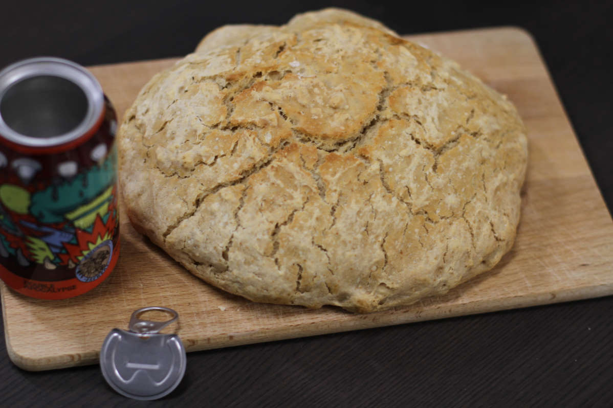

Beer Bread
metadata
Created on 2020-04-13 Last updated on 2020-05-16
Adapted from Beer bread by tommynaganuma @ Reddit (2019-10-07)
Estimated time needed: At least 59 minutes. At most 1 hours 4 minutes.
Ingredients
| 370 | g | flour | ||
| 330 | ml | beer | ||
| 3 | tsp | baking powder | ||
| 1 | tsp | salt |
Scaling
Timeline
Directions
⌛ Active time 1 minutes | Passive time 5 minutes
Pre-heat oven and cast iron pot:
225 ℃, convection. Place the cast iron pot you are going to use in there as well so that it is hot when you add the dough later. Keep the lid on in the oven so that it is warm as well.
⌛ Active time 5 minutes
- 330 ml beer
- 370 g flour
- 3 tsp baking powder
- 1 tsp salt
Mix ingredients:
Combine all the ingredients to a smooth dough. It will be very sticky, but that's fine.
⌛ Active time 2 minutes
Transfer dough to cast iron pot and place in oven:
No need to let it rise. Keep the lid on the pot when placing it in the oven.
⌛ Passive time 25 minutes
Bake for 20 to 25 minutes
⌛ Active time 1 minutes | Passive time 25 minutes
Remove the lid and reduce temperature:
Remove the lid, and reduce the temperature to 190 ℃. Bake for about 25 minutes more, and it should be done.